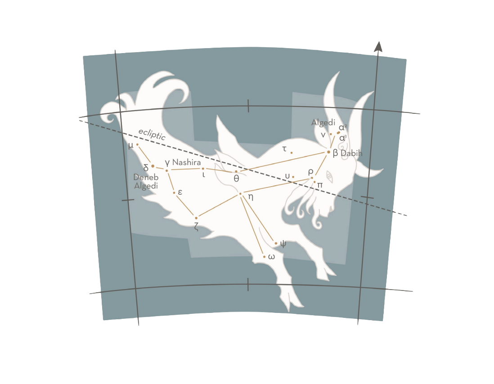

December - January
CAP —CAPRICORNI / THE SEA-GOAT
The tenth and smallest zodiacal constellation, Capricornus is traced out by third- and fourth-magnitude stars, east of Sagittarius. Its midnight culmination is in early August, but the combination of light skies and a location south of the equator renders it unimpressive on a summer evening from middle and upper latitudes of the Northern hemisphere. It can be found by a line from Vega (α Lyr), across the Milky Way, through Altair (α Aql) to Algedi and Dabih, the a and β stars of the horns of the goat.


MAJOR STARS
α — Algedi or Giedi, 3.6, yellowish
Both names mean either “goat” or “ibex”. Algedi is actually a pair of stars, apparently close but unrelated. The name Dabih (see below) has also been given to this star.
β — Dabih, 3.1, golden-yellow
The name is derived from the Arabic Al Sa’d al Dhabih, the “lucky one of the slaughterers”, referring to the Arabic tradition in which a goat was sacrificed when the Sun first entered the star-fields of Capricorn.
γ — Nashira, 3.8
The name derives from the Arabic for “bringer of good tidings”.
δ — Deneb Algedi, 2.9
The “tail of the goat”, Capricorn’s lucida. 5° to its east is the point at which, in 1846, the French astronomer Le Verrier calculated the existence of the planet Neptune — a delightful mirroring of the mythological connection between Capricorn, Neptune and the sea.
STARLORE
For the Mesopotamians Capricornus marked the point in the year when the Sun was at its farthest point south of the equator — the December solstice. The imagery of Capricorn as a goat-fish may have Assyro-Babylonian origins in Oannes, god of wisdom, who was half-fish, half-man. This figure reappeared at long intervals in the Persian Gulf, disguised as a mermaid, and taught humankind the arts and sciences.
Among the Latin poets Capricornus was known as Neptuni proles, “Neptune’s offspring” (the Roman god Neptune, or Poseidon in Greek myth, ruled the sea). In Indian starlore the constellation was a crocodile, or a curious goat-headed hippopotamus.
Aside from the goat-fish theme, Capricornus is associated with the Greek Pan (Priapus in Asia Minor), noted for his lustful behaviour and the invention of the pan pipes. Some say that he was a satyr, a man with goat’s legs, cloven hooves and small horns. He became honoured when the sea-monster Typhon was sent by the Titan goddess Rhea to destroy the Olympian gods. As the monster approached, Pan plunged into a river and tried to turn himself into a fish to escape. However, he managed only half his transformation. By the time that he had struggled back onto land, Typhon had dismembered the supreme god Zeus (Jupiter). To frighten the monster Pan let out a shriek long enough to enable nimble Hermes (Mercury) to retrieve Zeus’ scattered limbs. Together Pan and Hermes carefully restored the god, who then rew
